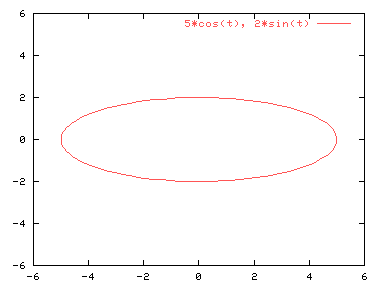
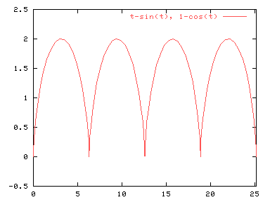

| Herramientas en GNU/Linux para estudiantes universitarios: | ||
|---|---|---|
| Anterior | Capítulo 5. Representaciones paramétricas | Siguiente |
Por ejemplo, para representar las ecuaciones x=5*cos(t), y=2*sin(t):
set parametric
set xrange [-6:6]
set yrange [-6:6]
set trange [0:2*pi]
set isosamples 60
plot 5*cos(t),2*sin(t)

Los valores de xrange e yrange indican los rangos que se van a dibujar en la gráfica, mientras que trange es el rango de valores que va a tomar la variable paramétrica t. Si se indica un rango para el comando plot, este se referirá al trange. La primera parte de la ecuación paramétrica nos da el valor de X, y la parte tras de la coma el valor de Y.
Veamos otro ejemplo:
set xrange [0:8*pi]
set yrange [-.5:2.5]
plot [0:8*pi] t-sin(t),1-cos(t)
